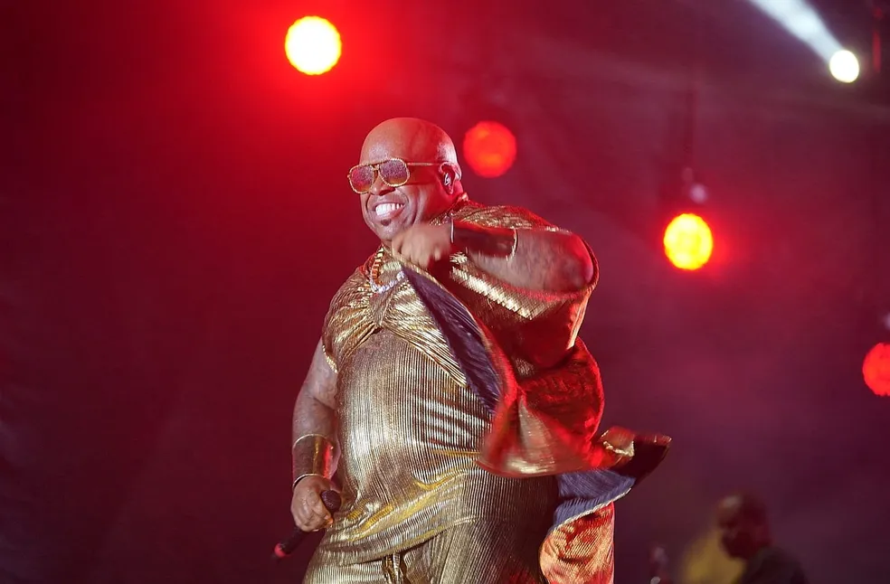

Voto de Carmen Lucia hoje pode ser decisivo para Bolsonaro; veja o que esperar da sessão
1º Turma do STF tem 2 votos a 1 para condenar o ex-presidente por golpe de Estado. Há maioria para condenar Cid e Braga Netto por abolição violenta do Estado de Direito
Mais Notícias

Corinthians vence o Athletico-PR de novo e avança às semifinais da Copa do Brasil
Com gol e assistência de Gui Negão e Hugo Souza pegando pênalti, Timão emenda sexta vitória na competição, segue sem ser vazado e chega à semi pela quarta vez

Polícia prende acusado de atirar no pescoço de policial militar durante abordagem em Paraisópolis
O crime foi gravado em vídeos feitos por testemunhas e também pela câmera corporal do PM, que sobreviveu ao disparo.

Acusação de estupro, acidente fake e posts problemáticos: as polêmicas de CeeLo Green
Músico teve problemas de reputação ao longo de sua carreira, e já chegou a ser retirado de projetos após declarações controversas. Ele se apresenta no The Town nesta sexta (12).